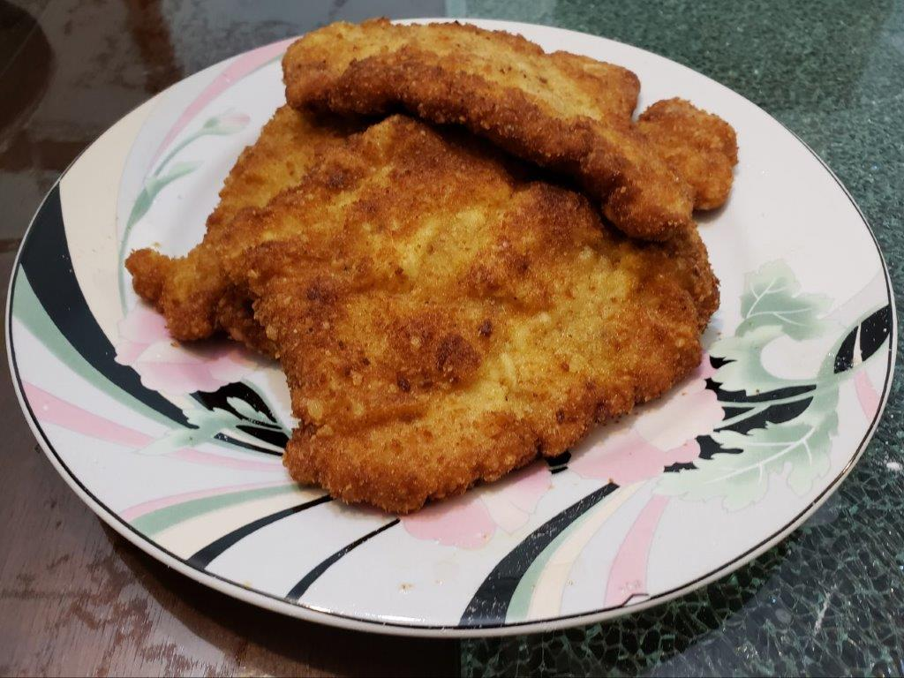

Schnitzel

Ingredients:
- 4-5 Pork chops, boneless, fat trimmed
- Salt, to taste
- Black pepper, to taste
- 1/2 cup Flour
- 1 tsp Salt
- 2 Eggs
- 3/4 cup Breadcrumbs
- Oil for frying
Instructions:
- Place the pork chops between two sheets of plastic wrap and pound them until just 1/4 inch thick with the flat side of a meat tenderizer. Lightly season both sides with salt and freshly ground black pepper.
- Begin to heat about half an inch of oil in a pan large enough to hold one of the flattened pork chops. Bring the oil to about 330 degrees Fahrenheit.
- While the oil is heating, place the flour mixture, egg, and breadcrumbs in 3 separate shallow bowls. Coat a pork chop in the flour, the eggs, and then the breadcrumbs. Be careful not to press the breadcrumbs into the meat. Then fry the pork chop immediately. Fry the Schnitzel for about 2-3 minutes on each side until a deep golden brown. Repeat for the next schnitzel while the previous one cooks.